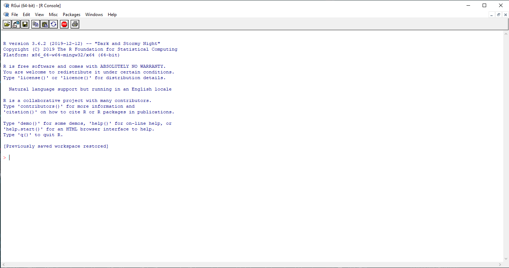
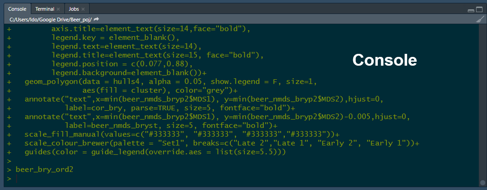
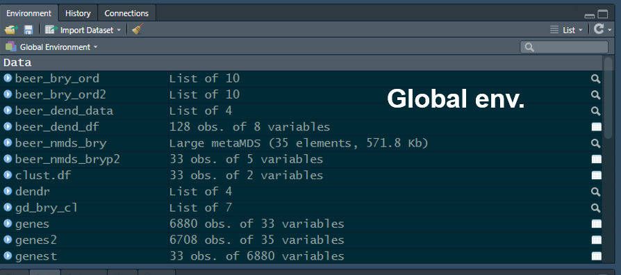
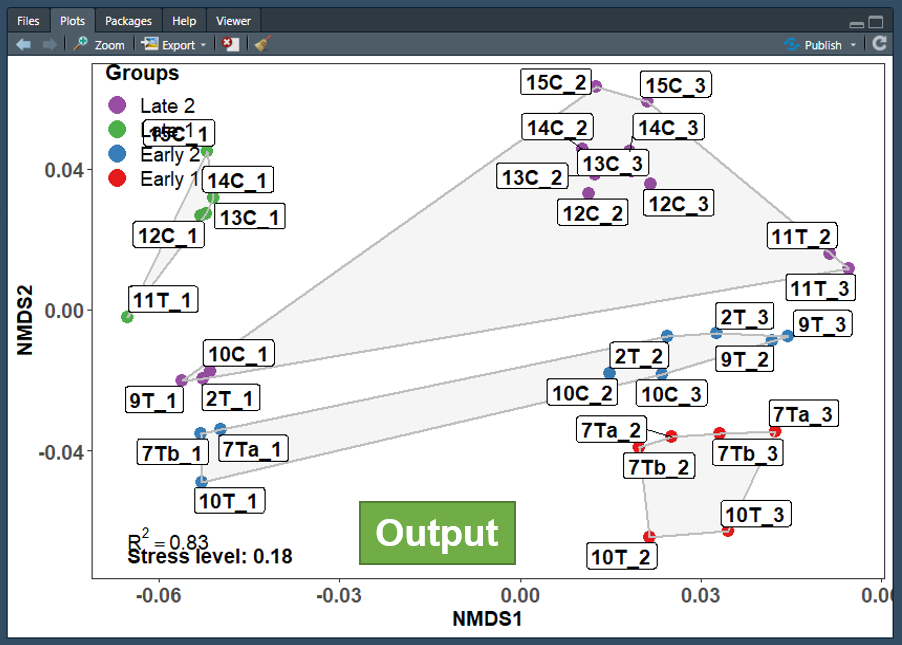

Lab 1 introduction to the R programming language and the R studio IDE
Learning objectives
Click to expand
By the end of this lab you will be able to:
Install the R interpreter and the Rstudio integrated development environment
Demonstrate the ability to install and load packages from a variety of repositories including development versions from github
Understand the different components of the Rstudio environment
Demonstrate mastery of R object and data types including indexing, subseting and manipulating objects
Demonstrate the ability to call and chain functions
Getting started
What is R?
R is a free and open source programming language, operating as a GUN project. The R language is maintained and supported by the R Foundation for Statistical Computing.
“R is a functional programming language and environment for statistical computing and graphics”
— The R dev team
R is best known as a programming language with strong capabilities of manipulation, exploration and statistical analysis of data from diverse types and sources. However, it also provides an environment for data handling, graphical representation of data as well as data reporting. R is a great platform for documentation and in fact this entire lab manual was written in R using the rmarkdown package.
Why use R?
- Open source and free
- Available on all major platform
- Large community of users and developers (over 2M users in academia, government, and industry)
- Thousands of open source packages aimed at the analysis of biological data in general and genomic and evolutionary data in particular
- Customizable and allows for the construction of pipelines
- Reproducible analysis
Downloading and installing R and RStudio desktop
To download R, go to the R download page select the SFU mirror then select your operating system and download and install both 32 and 64 bit versions.
To download RStudio desktop, go to the RStudio download page and download the free RStudio desktop version.
Note that you must download and install both R and RStudio in order to be able to work with R in the RStudio IDE. Note that it is important that you have the most uptodate verssion of R, even if R is already installed on your computer make sure to update it. If using Windows you can use the installr package to update R.
The R interpreter
Generally speaking, R is an interpreted language, and it’s human readable code cannot be directly converted to machine code by the operating system. Therefore, it needs an interpreter to translate the human readable code to a format understood by the operating system and the processing unit as the code runs.

Figure 0.1: The R console
The R console is an R interpreter with a very simple GUI. It allows you to write and run your code line by line just like you would in a terminal.
Console input and output:
1+1## [1] 23*3## [1] 94/2## [1] 24^2## [1] 16print("Hello world")## [1] "Hello world"In the example code above… something about the console interpreting white and in gray output… Furthermore, the print function was called to print the famous “Hello world” combo no coding workshop is complete without.
Short console exercise
Now let’s get you to work. The following lines of code will assign values to the variables “j”,“k”, and “rowling” (we will discuss variable assignment in R later in this lab). Open the R console on your computer and run them.
j <- "Harry"
k <- "Poter"
rowling <- data.frame(First_name = j,Last_name = k)Notice that no output was generated, since you only assigned values to some variables. You can get the interpreter to output the value of each variable by calling them in the console. Try it for each of them. As you can see, the variables are stored in memory. This is evident by the output generated when you called the variables in the console. Furthermore, without knowing too much R, you probably already guessed that not all variables are created equal and that there is some differences between rowling and the rest of the variables. However, the console doesn’t let one see immediately how many variables one stored in memory, nor does it let one see their names, memory allocation, type, etc. In order to see those using just the console you would have to call an array of functions. For example try running the following function is your console.
ls()If you are familiar with UNIX based operating systems, you probably recognized that ls is short for list. When running the ls() function in the console, the the output will list all stored variables. But as you may notice, this is about all it does. You can also imagine that this is not the most efficient way to keep track of the variables you declare when working with more than a couple variables (which is sometimes required). In order to keep things streamlined and organized, it is advisable to work with an Integrated Development Environment (IDE), which allows you to have better control of code editing, variable storage, console output etc. R has several IDEs, however the most popular by far is RStudio.
The RStudio IDE
As mentioned above, RStudio is an integrated development environment (IDE) for R. It is highly customizable but its default setting include four panes, a text editor pane, a console pane, a global environment pane, and an output pane.

Unlike the basic console GUI, RStudio allows you to mange and separate different R project (e.g. you could have a separate project for this course and and for a stats course). Another advantage of R studio is its integration of version control which include both Git and SVG. This will be beneficial if future course when you will be required to collaborate on projects.
The text editor pane
The text editor pane is found on the top left corner of the RStudio screen. The text editor allows you to edit code before sending it to the console. As shown in the figure below, there are some advantages of writing your code with the RStudio code editor. It auto-completes syntax, functions, and variables. The text editor also helps in code debugging by flagging lines with errors (marked by a red dot with an X). It also allows you to edit multiple scripts using tabs, just like your web browser.

Figure 0.2: The RStudio text editor
Using the text editor allows you to send code to the console line by line (or as chunks, by highlighting multiple lines) by using a keyboard shortcut(command enter in mac-OS, Ctrl enter win and Linux). Alternatively this can also be done pressing the run button at the top left corner of the editor. The editor also allows you to source the entire script to the console by pressing the source button (the rightmost button). The text editor supports multiple languages(e.g. C++, python, SQL, etc…) if you fancy programming in a language other than R.
The console pane
The console pane is found below the text editor.This is where code input and output resulting from the code can be seen. You can also write and run code directly at the console, just like when using the R interpreter GUI. The console allows you to manage multiple R jobs (we will not use that) through the job tab, as well as running a bash terminal (terminal tab) for system commands (we might use that).

Figure 0.3: The RStudio console
The global environment pane
The global environment pane is found to the right of the text editor, this is where you can see all the variables you called. It will also tell you what type of variables they are and how much memory they use.

The global environment pane also contains a history and a connection tab. The history tab saves all the lines of code ran through the console. It also allows you to resend lines of code back to the text editor which is very useful if you deleted them by accident instead of commenting them out. The connection tab allows you to connect RStudio to database servers (e.g. SQL (ODBC) or Spark, we will not use that).
The output pane
The output pane is found bellow the global environment pane and is where graphical output will show up. Here you can scroll through as well as export all of the plots that you generated while analyzing data and running scripts.

The output pane also includes a file tab which allows you to see all the files you exported as well as a help tab which allows you to brows through documentation with details of the functions you might want to run. The package tab helps you manage the R extension packages you might have installed and allows you to see which ones are loaded.
Note that each of these panes include tabs that were not included in this tutorial. However, they can be very useful and I encourage you to explore them as you learn to use RStudio.
Short exercise in RStudio
Copy the following code to RStudio’s text editor
j <- "Harry"
k <- "Poter"
rowling <- data.frame(First_name = j,Last_name = k)
data(cars)
car_data <- cars
plot(cars)Useless.function <- function(x){
if(is.numeric(x)){
print("This function is goddamn useless")
} else {
print("This function is goddamn useless")
}
}Try writing the last line instead of copying and pasting it, did you notice how the editor completes the syntax for you as the function data.frame is called?
Practice running it line by line, as a chunk, and sourcing it completely.
What happens in the global environment when you ran the code?
Are all called variables listed under the same category in the global environment pane?
Can you tell how much memory is car_data using?
What happens when you press rowling?
What do you see in the output pane?
What happens when you call the rowling variable directly in the console?
Programming in R - the basics
R language and syntax
R is an expression language with very simple syntax requiring that you list call-functions, in order to perform tasks on your data.
In the code bellow two functions were called, first is the mathematical operator +, this is somewhat of an irregular function structure ( infix function if you’re interested) that tells R to sum the two numbers. In this case, the arguments (the numbers needed to be summed) are placed on both side of the function (again in this case the + operator). These are referred to as left hand side (LHD) and right hand side (RHD) arguments. The second function is the print function, which is a regular function, and R syntax requires that you write the arguments within parenthesis that come after the function.
#Calling an irregular function <-- btw this is how you comment
1+1## [1] 2#Calling a regular function
print(j)## [1] "Harry"The code snippet above is an example for a script where functions are separated by a line, and each function runs sequentially. Functions, however, can also be separated by a semicolon (;) and written in the same line as can be seen in the code snippet bellow. Note that while the example bellow gives identical results this writing style is not encouraged as it reduces the readability of the code.
#An example of poor code
1+1;print(j)## [1] 2## [1] "Harry"R is case sensitive, whenever a function is called one needs to make sure that both it and it’s arguments are written properly, otherwise the function will produce an error.
#Variable is capitalized
print(J)## Error in print(J): object 'J' not found#Function name is capitalized
Print(j)## Error in Print(j): could not find function "Print"The print function only accepts one argument, however some functions in R accept multiple arguments. The code bellow calls the function c, c concatenates similar variables in R into one variable. When more than one argument is used, the arguments should be separated by a comma (“,”).
#Spoiler for the order of operations in R
print(c(j,k))## [1] "Harry" "Poter"Here is another example of a function that accepts more than one argument. The sep argument is an example of an argument that’s not a variable.
#j and k are variables, sep (short for separator) is not.
print( paste(j,k, sep = ";") )## [1] "Harry;Poter"So how can you tell which or how many arguments does a function accept? Well, the RStudio text editor offers a glimpse of the arguments as you write the function but the proper way to do is is to call the function documentation. This is done by invoking the help function, which uses the ? operator as seen in the code snippet below.
?paste
# This is equivalent of help(paste)
#? is another irregular function that accepts a LHS argumentWhen running this code using RStudio, the help tab will be prompted and you will be able to see the paste function
documentation. Arguments for the function are specified both under usage and arguments.
Usage specify the arguments and informs the user of arguments with set values, for example the argument sep has a set
value of ” “, which denotes white space. Often you would encounter arguments with a set value of NULL, this lets R
know that for all intents and purposes the argument should be ignored unless value is specified by the user.
The arguments section provides an explanation regarding to the function of each of the arguments. For example the
value sep is a character string that separates the terms being pasted. This means that the default separator for
pasted terms is a white space.
The … (dot dot dot) argument
The paste function also include the “…” argument, this is a special argument that matches any unspecified arguments and makes sure that the function accepts them if possible. Here, the underlying conditions is that any unspecified argument must be a vector (we will discuss what vectors are later in this tutorial).
Extended search
Sometimes the documentation for a function is not found in the environment you loaded (we will get to libraries of functions extending the capabilities of R later in this tutorial), in order to perform an extended search of all libraries installed on your computer use double question mark (“??”).
Quick R exercise:
- The previous code snippets provided a good example of the order of operation in R when nesting functions. Look at the code bellow, what do you think the order of operation is? Which function will run firs? Which will run second, which will run third?
print(paste(c(j,k),
c(k,j), sep = " "))- sum is a function in R. Can you find its purpose and how many arguments does it accept?
A Note on indentation in R
The example code above includes indentation however, unlike in other programming languages, R does not require that you indent your code. Indentation is only used to make code more readable to humans, especially as it gets more complex. As you will learn, the flow of operations in the basic R is determined by parenthesis “()” when combining functions (e.g. the code above) and braces “{}” when writing costume functions and statements (an example of that is the Useless.function).
## Expanding R’s capabilities by installing additional function packages
The R language includes an extensive array of functions. Those are known as base R, or core R functions. However, sometimes developers will write R functions that enhance R’s capabilities beyond the scope of the basic core functions (e.g. enhanced graphical capabilities, faster and more efficient data manipulation, etc.) or functions designed for a specialized tasks which doesn’t concern most R users (e.g. population genetics, SQL integration etc.).
Usually developers package their functions in what is known as function libraries, or packages, and publish them to the public. These packages can be downloaded and installed by R users, and the functions they contain expand the capabilities of R.
There are several repositories that store R packages, here we will go over 3 of them.
- The CRAN repository:
The CRAN repository is the main repository for R packages. It is maintained and rigorously curated by the R foundation and currently contains over 15K packages. The scope of these packages is very broad and they can enhance R capabilities in anything from graphical representation of data, to genomic analysis, to development of web applications. Each of the packages featured in the CRAN repository contains documentations including a manual with a list of all functions included in the package and examples for how to use them. Some contain workflows.
To install a package from the CRAN repository use the function install.packages, note that install.packages doesn’t load the package. If you want to call functions from within this package you need to load it using the function library (). Alternatively you can use “::” which allows you to call the function without load the package that contains it. This may also be used if you loaded two packages that contain a function with similar name, or if a function from one package is masking another.
#note the use of '' around the argument in these functions, they will recognize the argument without the use of ' ' however it is considered good practice to write the code with them.
install.packages('x')
library('x')
x::function.x()- Bioconductor:
Bioconductor is a repository for packages designed for handle and analyse high throughput biological data (e.g. omics, flow cytometry, etc.). Contains over 1800 packages, however not all packages aimed at analyzing high throughput biological data are published in Bioconductor since it requires the variables to be stored in an object with specialized structure (S4 object). The packages are curated by the Bioconductor project for open source bioinformatic software. Each Bioconductor package contains at least one vignette, a document that provides a task-oriented description of package functionality. Most also contains a manual with example SOPs.
- GitHub:
GitHab is basically a developer’s domain, and most if not all R packages are stored on GitHab at one point or another during the stage for their development. Most packages also have a GitHub version in addition to the CRAN or Bioconductor version. The version on GitHub is a developer version with capabilities absent from the official distribution of the package. Those versions are normally less stable as they are in the testing stage of the development. There is no curation of github packages, therefore documentation is patchy.
Installing packages from Bioconductor and GitHub require additional package managers and have their own special installation functions. We will go over it during labs 3-4.
Quick R exercise
Install the package vegan from the CRAN repository
What is the purpose of this package?
How many arguments does the anosim function from this package accepts, how many of them are variables?
0.3 Variable assignment in R (<- vs -> vs =)
R has three ways of assigning values to variables, two of them are leftwards and one rightwards. Leftwards assignment is the most common way to assign value to variables, this is similar to other programming language like python or C++. In R this is achieved by using the assign operator “<-”, or alternatively similar to python and C++ by using the equal operator “=”.
Leftwards assignment groups the values from right to left, therefore in the snippet bellow the value of the variable v will be 1 and the value of of variable v2 will also be 1 since it will get the value of variable v.
While on the surface both methods work identically, beneath the surface they are quit different and using “=” may lead to errors . Therefore, the convention is to always use “<-” over “=”.
#This is leftwards assignment
v <- 1
#This is an alternative leftwards assignment
v2 = v
v## [1] 1v2## [1] 1Rightwards assignment works opposite to leftwards assignment. It uses the rightwards assign operator “->”, and groups everything left to right. Therefore, in the code snippet bellow, the value of variable v2 will now be 3. Note that rightwards assignment is discouraged and good coding practices dictate that all variables should be assigned using the leftwards method.
3 -> v2
v## [1] 1v2## [1] 3A note on alliasing and R
While the code above assigns the value of v to variable v2. Unlike in python or java for example, this does not create an alias (creating an alternative name for a variable stored in memory) and there is no link between v and v2. v2 can be assigned a different value or be edited by upending more values to it or modifying the original value and v1 will not be affected.
0.4 Rules for variable naming in R
Variable naming in R follows a few simple rules:
Variable names must not be the same as R’s special characters or functions (except for c)
Variable names must always start with a letter, however they may contain numbers and other characters
Special characters must be escaped using ``, and it is recommended that they be avoided in general
Variable names are case sensitive (but you already know that)